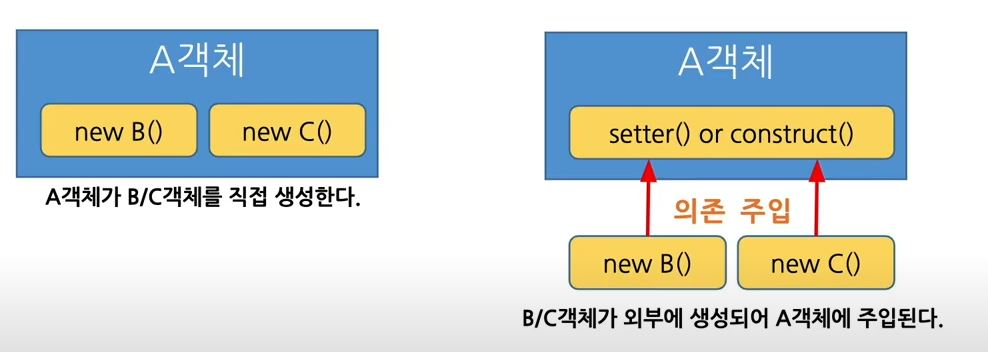
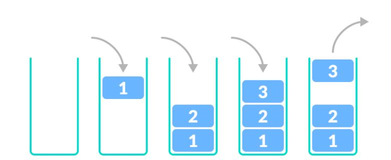
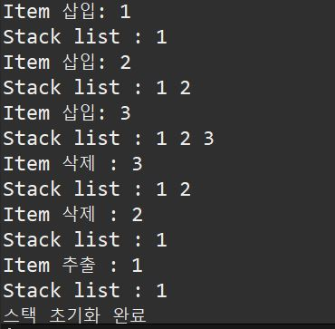

21 01 09
DI(Dendency Injection)

약한 결합과 강한 결합
1 2 3 4 5 6 7 8 9 10 11 12 13 14 15 16 17 18 19 20 21 22 | import java.util.Date; public class DI { public static void main(String[] args) { Date date = new Date(); } public static void getDate(Date d) { Date date = d; } public static void User1() { Member m1 = new Member(); } public static void User2(Member m) { Member m2 = m; } } class Member { String name; String phone; public Member() {} } | cs |
2.스택(Stack)
2-1.스택이란

- 한 쪽 끝에서만 자료를 넣고 뺄 수 있는 형식의 자료 구조
- LIFO
2-2 스택 구현
다음은 일반적으로 스택에 사용되는 필수적인 메서드 입니다.
- push : 스택의 가장 최상위에 데이터를 삽입
- pop : 스택의 가장 최상위에 위치한 데이터를 삭제
- Empty : 스텍이 empty 상태인지 확인
- clear : 스택에 저장된 모든 데이터를 삭제하고 스택을 초기화
- peek : 스택에 가장 최상위에 위치한 데이터를 추출
1 2 3 4 5 6 7 8 9 10 11 12 13 14 15 16 17 18 19 20 21 22 23 24 25 26 27 28 29 30 31 32 33 34 35 36 37 38 39 40 41 42 43 44 45 46 47 48 49 50 51 52 53 54 55 56 57 58 59 60 61 62 63 64 65 66 67 68 69 70 71 72 73 74 75 76 77 78 79 80 81 82 83 84 85 86 87 88 89 90 91 92 93 94 95 96 97 98 99 100 101 102 103 104 105 106 107 108 109 | public class ArrayStack implements Stack{ int top; int stackSize; int stackArr[]; //생성자에서 스택생성 public ArrayStack(int stackSize) { top = -1; //스택 포인터 초기화 this.stackSize = stackSize; stackArr = new int[this.stackSize]; //stack 배열생성 } //스택이 비어있는 상태인지 확인 @Override public boolean isEmpty() { return (top == -1); // 스택 포인터가 -1인경우 true 반환 값이있으면 false } //스택이 가득차있는 상태인지 확인 @Override public boolean isFull() { return top == this.stackSize-1; //스택 포인터가 마지막인덱스와 동일한경우 true 아닌 경우 false } //스택에 데이터 추가 @Override public void push(int item) { if(isFull()) { System.out.println("스택이 가득 차있습니다."); }else { stackArr[++top] = item; //다음 스택포인터가르키고 데이터 추가 System.out.println("Item 삽입: " + item); } } //스택의 최상위 데이터 추출 후 삭제 @Override public int pop() { if(isEmpty()) { System.out.println("스택이 비어있습니다."); }else { System.out.println("Item 삭제 : " +stackArr[top]); return stackArr[top--]; } // TODO Auto-generated method stub return 0; } //스택의 최상위 데이터 추출 @Override public int peek() { if(isEmpty()) { System.out.println("스택이 비어있습니다."); }else { System.out.println("Item 추출 : " + stackArr[top]); } // TODO Auto-generated method stub return stackArr[top]; } //스택 초기화 @Override public void clear() { if(isEmpty()){ System.out.println("스택이 비어있습니다."); }else { top = - 1; //스택 포인터 초기화 stackArr = new int[this.stackSize]; //새로운 스택 생성 System.out.println("스택 초기화 완료"); } } //스택내용 모두 출력 public void printStack() { if(isEmpty()) { System.out.println("스택이 비어있습니다."); } else { System.out.print("Stack list : "); for(int i=0; i<=top; i++) { System.out.print(stackArr[i] + " "); } System.out.println(); } } public static void main(String[] args) { int stackSize = 5; ArrayStack arrStack = new ArrayStack(stackSize); arrStack.push(1); arrStack.printStack(); arrStack.push(2); arrStack.printStack(); arrStack.push(3); arrStack.printStack(); arrStack.pop(); arrStack.printStack(); arrStack.pop(); arrStack.printStack(); arrStack.peek(); arrStack.printStack(); arrStack.clear(); } } | cs |
Result

2-3 스택의 사용사례
- 재귀 알고리즘
- 웹 방문기록(뒤로가기)
- 후위 표기법 계산
- 역순 문자열 만들기
팩토리얼 구하기 (Factorial)!
static int factorial(int n) {
int result = 1;
for(int i= n; i >= 1; i--) {
result *= i;
}
return result;
}
그리고 이코드를 재귀 함수로 표현해보면 만약 5! 을 구해야된다고 가정을하면
factorial(5) = 5 * 4 * 3 * 2 * 1 = 5 * factorial(4);
factorial(4) = 4 * 3 * 2 * 1 = 4 * factorial(3);
factorial(3) = 3 * 2 * 1 = 3 * factorial(2);
factorial(2) = 2 * 1 = 2 * factorial(1);
factorial(1) = 1
여기서부터는 점화식이 보이기 시작한다. 저 규칙대로하면 factorial(n) = n * factorial(n-1)
static int factorial(int n) {
if(n == 1) { //BaseCase
return 1;
}
return n * factorial(n-1);
}
2-5 시간복잡도
| Insert, Delete | O(1) |
| Search | O(n) |